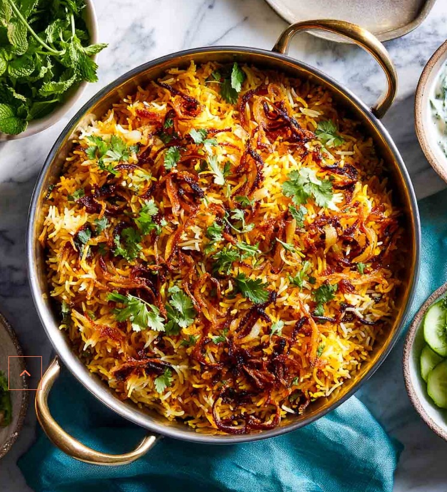
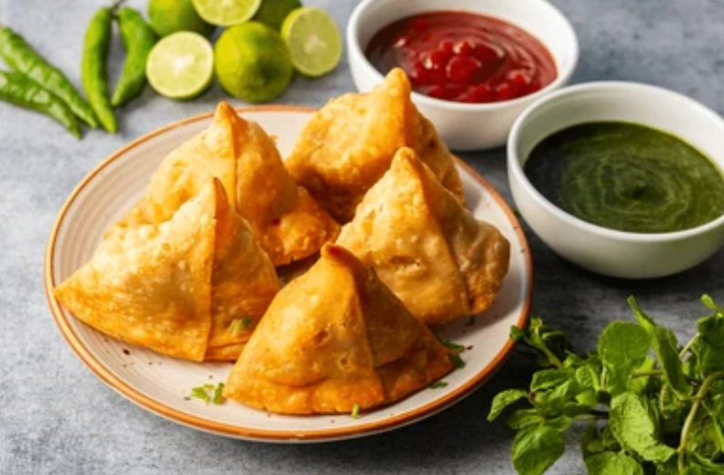

Biryani is a flavorful one-pot dish made with spiced rice and meat or vegetables,
originating from Persia but popular throughout South Asia. The name comes from the
Persian word for "fried" or "roasted," and the dish is prepared by layering marinated meat,
spices, and basmati rice and cooking them together slowly to meld the flavors.
Common varieties include chicken, mutton, and vegetarian biryani, often served
with raita to complement its rich taste.

A samosa is a popular, triangular-shaped pastry with a crispy outer crust,
typically filled with a savory mixture of spiced potatoes, peas, and onions.
It is a beloved snack in India and other parts of the world, often fried and
served hot with chutneys like tamarind or mint. Samosas are versatile, with
regional variations in filling and shape, and can also be made with meat or other vegetables.

Butter chicken, also known as murgh makhani (chicken with butter), is a popular
Indian curry known for its rich and creamy tomato-based gravy. It was created in
Delhi in the 1950s by Kundan Lal Gujral, one of the founders of the Moti Mahal
restaurant. The dish originated "by chance" as a way to repurpose leftover tandoori
chicken by simmering it in a velvety sauce of tomatoes, cream, and butter.